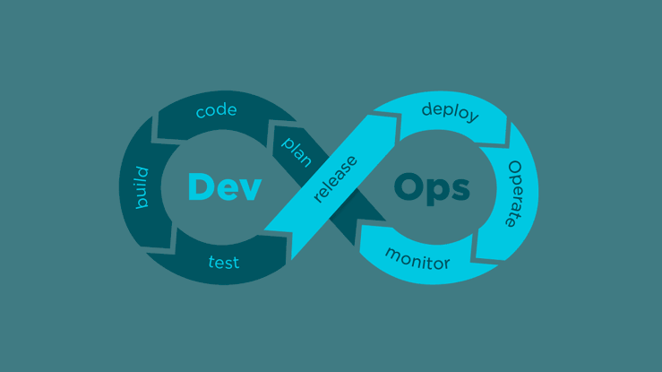

O(a) profissional de DevOps (abreviação de Desenvolvedor & Operações) é o(a) responsável por otimizar a produtividade dos desenvolvedores e a confiabilidade das operações, desde a etapa de idealização, passando pelo desenvolvimento, até o feedback para garantia de que o produto atenda as necessidades dos clientes.